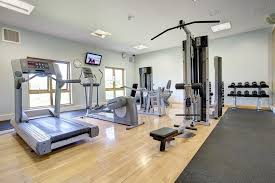
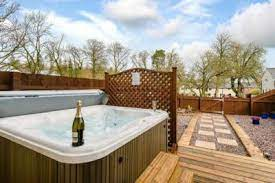

Facilities available with your stay
If you wish to relax then there are plenty of facilities were you can melt away tension and relax your mind.



If you wish to relax then there are plenty of facilities were you can melt away tension and relax your mind.